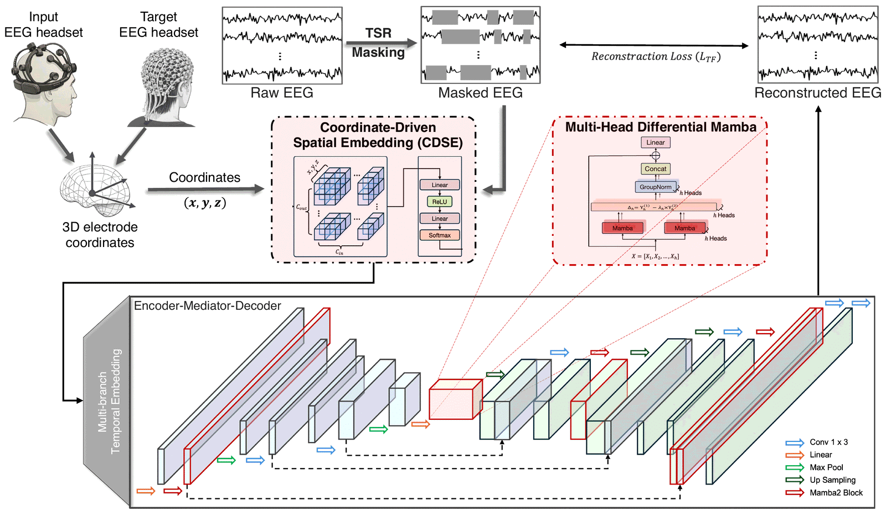

braindecode.models.SAMBA#
- class braindecode.models.SAMBA(n_outputs=None, n_chans=None, chs_info=None, n_times=None, input_window_seconds=None, sfreq=None, *, target_positions=None, base_channels=64, bottleneck_channels=128, d_state=16, d_conv=2, expand=8, head_dim=16, cdse_hidden_dim=32, branch_kernel_sizes=(1, 3, 7), pool_size=2, stage_kernel_size=3, encoder1_head_dim=64, chunk_size=64, dt_min=0.001, dt_max=0.1, dt_init_floor=0.0001, a_init_range=(1.0, 16.0), norm_eps=1e-05, channel_strategy='native', channel_strategy_kwargs=None)[source]#
SAMBA from Hong et al. (2026) [samba].
Convolution Recurrent Channel Foundation Model

SAMBA pre-training with the coordinate-driven spatial embedding, the multi-head differential Mamba and the encoder-mediator-decoder, reproduced from [samba] (CC BY 4.0).#
Added in version 2.1.
Architecture Overview
The encoder of SAMBA, a U-shaped Mamba autoencoder pretrained to rebuild masked EEG; the reconstruction decoder is not part of this class. A coordinate-driven spatial embedding (CDSE) first projects the electrodes onto a fixed target montage from their 3D positions, so the layers behind it never see the recording montage. Mamba-2 state space blocks [mamba2], with max-pooling and convolutions in between, then read the time axis in linear time (
pispool_size, 2 by default):(batch, n_chans, n_times) -> CDSE (batch, n_targets, n_times) -> multi-branch convolution (batch, base_channels, n_times) -> Linear, residual Mamba-2 (batch, n_times, base_channels) -> pool, convolution (batch, base_channels, n_times // p) -> pool, convolution (batch, bottleneck_channels, n_times // p**2) -> pool (batch, bottleneck_channels, n_times // p**3) -> Linear, differential Mamba-2, Linear (batch, n_times // p**3, bottleneck_channels) -> mean and std over time (batch, 2 * bottleneck_channels) -> final_layer (batch, n_outputs)
Macro Components
SAMBA.encoder.cdseOperations. An MLP
Linear(3, cdse_hidden_dim) -> ReLU -> Linear(cdse_hidden_dim, 1)scores the offset from each electrode to each target position; a softmax over the electrodes turns the scores into weights, and each target channel is the weighted sum of the electrodes. Role. Montage-agnostic input: any layout with 3D positions reaches the same layers.SAMBA.encoder.input_embeddingOperations. One
Conv1dper entry ofbranch_kernel_sizes(1, 3 and 7 by default) over the target channels, concatenated and fused by a pointwise convolution. Role. Temporal features at several scales on the target montage.SAMBA.encoder.encoder1_mambaOperations. After a
Linear, a residual Mamba-2 block: input-dependent step sizes, a causal depthwise convolution, a scan over the time axis in chunks ofchunk_sizesteps and a gated RMS norm. The scan is a pure PyTorch recurrence, with no CUDA dependency; its results need not be bitwise identical to the authors’ fused CUDA kernels. Role. Models the signal at the input rate.SAMBA.encoder.encoder2,SAMBA.encoder.encoder3Operations.
Conv1dof kernel sizestage_kernel_sizebehind a max-pooling bypool_sizeeach, with no activation in between, as in the authors’ code. Role. Divide the time axis bypool_sizeat each stage and widen the features tobottleneck_channels.SAMBA.encoder.bottleneck_mambaOperations. The channels are split into heads of
head_dim. Two Mamba-2 blocks read each head, andfirst - lam * secondfollowed by a GroupNorm cancels what the two readings share, withlama learned scale per channel. ALinearmixes the heads, with a residual connection. Role. The multi-head differential Mamba of the paper, at1 / pool_size ** 3of the input rate (one eighth by default).SAMBA.final_layerOperations.
Linearon the mean and the population standard deviation (correction=0) of the encoder output over time. Not pretrained. Role. The task head;reset_head()replaces it.
Temporal, Spatial, and Spectral Encoding
Temporal: Mamba-2 state space blocks at the input rate and at the rate left by three max-poolings by
pool_size; the output hasn_times // pool_size ** 3steps (n_times // 8by default).Spatial: electrodes enter only through their 3D positions, so any montage with positions can be read.
Spectral: no explicit spectral transform; the convolutions and the state space blocks learn it.
Additional Mechanisms
Coordinates. Positions are read from
chs_info[i]["loc"][:3], in metres, and must be in the frame oftarget_positions. The target montage of the authors’ released weights is in the frame of thecolin27_1005template of MNE (mne.channels.make_standard_montage;standard_1005in older versions, deprecated in MNE 1.13), not in the head frame thatraw.set_montagewrites intochs_info, which is a few centimetres away.Input scale. The model does not normalise its input. The authors’ recipe uses EEG at 128 Hz and divides each channel of each window by the 95th percentile of its absolute value.
Not causal. The convolutions and the GroupNorm look at the whole window, so the encoder is not a streaming model. The Mamba-2 blocks alone are causal.
Mamba-2 defaults.
encoder1_head_dim,dt_min,dt_max,dt_init_floor,a_init_rangeandnorm_epsdefault to the values of the referenceMamba2of state-spaces/mamba.
Pretrained Weights
The encoders of the authors’ SAMBA-2s and SAMBA-100s are on the Hugging Face Hub at
braindecode/samba-2s-pretrainedandbraindecode/samba-100s-pretrained, with the authors’ values (their files are Dcode-AI/SAMBA-2s ate553287and Dcode-AI/SAMBA-100s at3a235a1). The authors retrained both after the checkpoints of the paper were lost, so they are not the paper’s SAMBA-E and SAMBA-T. SAMBA-2s was pretrained on 2 s windows (256 samples) of Emotiv, HBN, Muse and DICE recordings, SAMBA-100s on 100 s windows (12,800 samples) of TUAB, so a TUAB task does not test transfer for it. Both expect EEG at 128 Hz, each channel of each window divided by the 95th percentile of its absolute value, with positions in metres in the frame of thecolin27_1005template (see Coordinates and Input scale). The head is not pretrained:from_pretrainedbuilds it for yourn_outputsand takes the 94 target electrodes of the weights aschs_infounless you pass yours. On a fixed input, the first and last five features of both encoders match those of the authors’ files, loaded with the port of #1689, to within 1e-5 (#1739); they were not compared with the authors’ fused CUDA kernels.from braindecode.models import SAMBA model = SAMBA.from_pretrained("braindecode/samba-2s-pretrained", n_outputs=2) # x: (batch, 94, n_times) -> features: (batch, 256) features = model(x, return_features=True)["features"]
- Parameters:
n_outputs (
int|None) – Number of outputs of the model. This is the number of classes in the case of classification.chs_info (
list[dict] |None) – Information about each individual EEG channel. This should be filled withinfo["chs"]. Refer tomne.Infofor more details.n_times (
int|None) – Number of time samples of the input window.input_window_seconds (
float|None) – Length of the input window in seconds.sfreq (
float|None) – Sampling frequency of the EEG recordings.target_positions (
list[list[float]] |None) – Positions(n_targets, 3), in metres, of the montage onto which the CDSE projects the electrodes.Nonetakes the positions ofchs_info; the saved config records them, so the trained model loads on another montage.base_channels (
int) – Width of the multi-branch embedding and of the first Mamba-2 stage.bottleneck_channels (
int) – Width of the differential Mamba-2 bottleneck; the head reads twice this many features.d_state (
int) – State size of every Mamba-2 block.d_conv (
int) – Kernel size of the causal depthwise convolution of every Mamba-2 block.expand (
int) – Inner width of every Mamba-2 block, as a multiple of its input width; it is split into heads.base_channels * expandmust be divisible byencoder1_head_dim.head_dim (
int) – Channels per head of the differential bottleneck; dividesbottleneck_channels.cdse_hidden_dim (
int) – Hidden width of the MLP of the CDSE.branch_kernel_sizes (
tuple[int,...]) – Kernel size of each branch of the multi-branch embedding, as in the authors’ code. Odd, so that the padding ofk // 2keeps the steps.pool_size (
int) – Kernel size and stride of the three max-poolings: each divides the number of steps bypool_size, son_times >= pool_size ** 3.stage_kernel_size (
int) – Kernel size of the two convolutions behind the first two poolings. Odd, so that the padding ofk // 2keeps the steps.encoder1_head_dim (
int) – Channels per head of the Mamba-2 of the first stage (headdimin the referenceMamba2).head_dimis that of the bottleneck.chunk_size (
int) – Steps per chunk of the Mamba-2 scan; bounds the size of its quadratic form.dt_min (
float) – Lower end of the log-uniform range of the initial step sizes of the Mamba-2 blocks.dt_max (
float) – Upper end of that range.dt_init_floor (
float) – Floor of the initial step sizes.a_init_range (
tuple[float,float]) –(low, high)of the uniform draw of the initial decay ratesAof the Mamba-2 blocks (A_init_rangein the referenceMamba2).norm_eps (
float) – Epsilon of the RMS norm that follows the gate of every Mamba-2 block.channel_strategy (
str) – How another montage reaches the encoder; seeEEGModuleMixin. The model reads the montage ofchs_infonatively, so the default"native"is usually what you want.channel_strategy_kwargs (
dict|None) – Options ofchannel_strategy.
- Raises:
ValueError – If some input signal-related parameters are not specified: and can not be inferred.
Notes
If some input signal-related parameters are not specified, there will be an attempt to infer them from the other parameters.
References
[samba] (1,2)Hong, J., Mackellar, G., Ghane, S. (2026). SAMBA: Toward an EEG Foundation Model via Differential Mamba and Coordinate-Driven Spatial Embedding. NeurReps 2026 (Proceedings Track). arXiv:2511.18571. https://github.com/Jiazhen-Hong/SAMBA
[mamba2]Dao, T., Gu, A. (2024). Transformers are SSMs: Generalized Models and Efficient Algorithms Through Structured State Space Duality. ICML. arXiv:2405.21060.
Hugging Face Hub integration
When the optional
huggingface_hubpackage is installed, all models automatically gain the ability to be pushed to and loaded from the Hugging Face Hub. Install with:pip install braindecode[hub]
Pushing a model to the Hub:
from braindecode.models import SAMBA # Train your model model = SAMBA(n_chans=22, n_outputs=4, n_times=1000) # ... training code ... # Push to the Hub; ``datasets`` and ``base_model`` go to the card model.push_to_hub( repo_id="username/my-samba-model", commit_message="Initial model upload", model_card_kwargs={"datasets": ["BNCI2014_001"]}, )
Loading a model from the Hub:
from braindecode.models import SAMBA # Load pretrained model model = SAMBA.from_pretrained("username/my-samba-model") # Data the weights were trained on, from the Hub model card print(model.card_data.datasets if model.card_data else None) # Load with a different number of outputs (head is rebuilt automatically) model = SAMBA.from_pretrained("username/my-samba-model", n_outputs=4)
Extracting features and replacing the head:
import torch x = torch.randn(1, model.n_chans, model.n_times) # Extract encoder features and a mean-pooled 2-D embedding out = model(x, return_features=True) embedding = out["embedding"] # (batch, dim) features = out["features"] # Replace the classification head model.reset_head(n_outputs=10)
Note that
torch.jit.scriptreturns features only on models whoseforwarddeclaresreturn_features.Saving and restoring full configuration:
import json config = model.get_config() # all __init__ params with open("config.json", "w") as f: json.dump(config, f) model2 = SAMBA.from_config(config) # reconstruct (no weights)
All model parameters (both EEG-specific and model-specific such as dropout rates, activation functions, number of filters) are automatically saved to the Hub and restored when loading.
See Loading and Adapting Pretrained Foundation Models for a complete tutorial.
Methods
- forward(x, return_features=False)[source]#
Encode EEG windows and score them.
- Parameters:
- Returns:
Outputs of shape
(batch, n_outputs). Withreturn_features=True,{"features": Tensor, "cls_token": None}with the(batch, 2 * bottleneck_channels)input offinal_layer.- Return type: